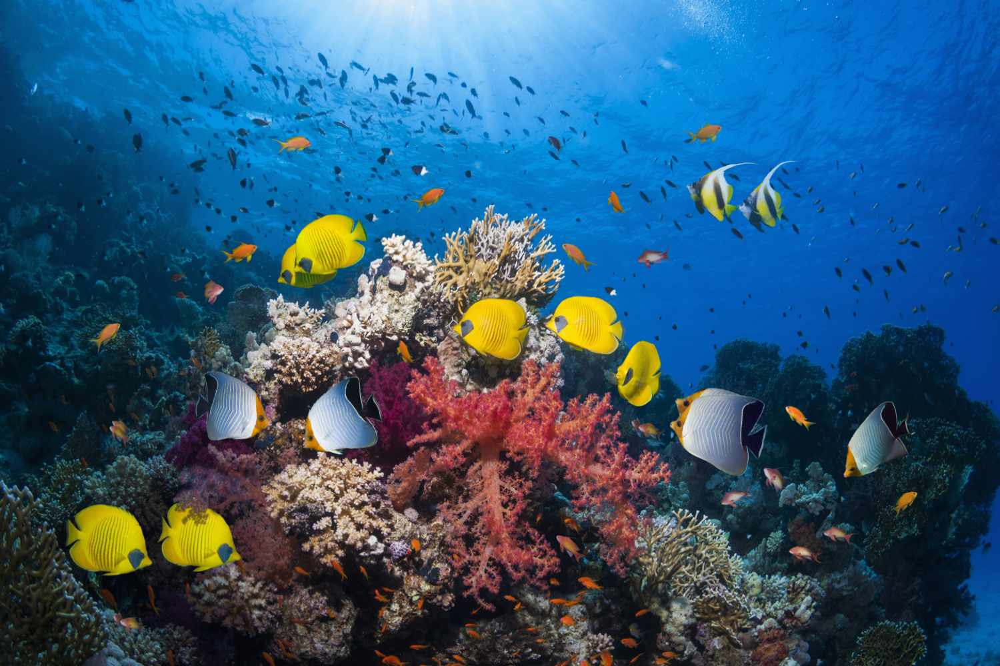
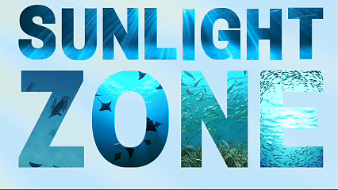
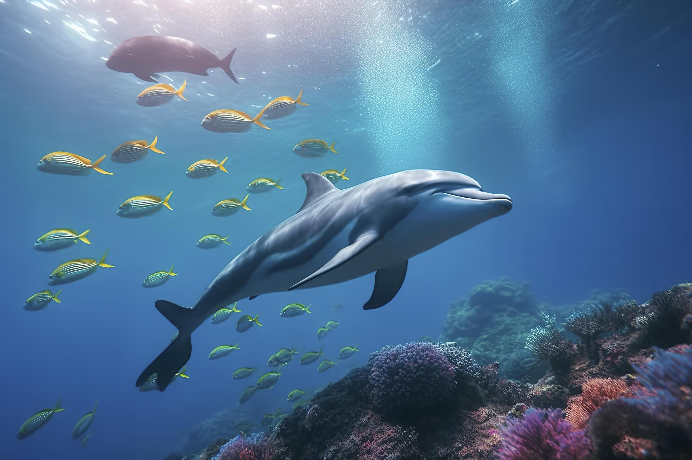
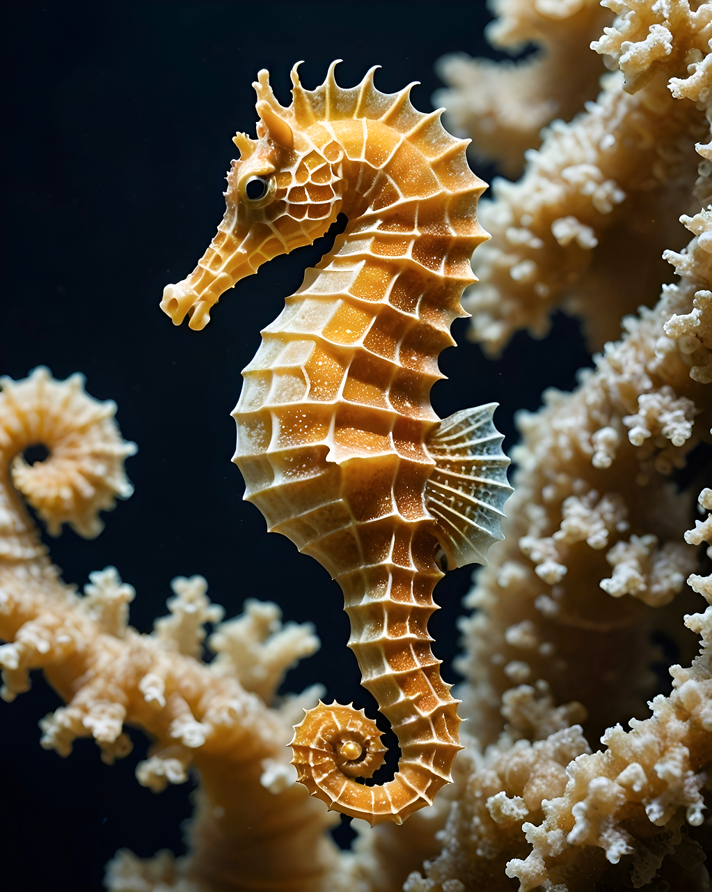
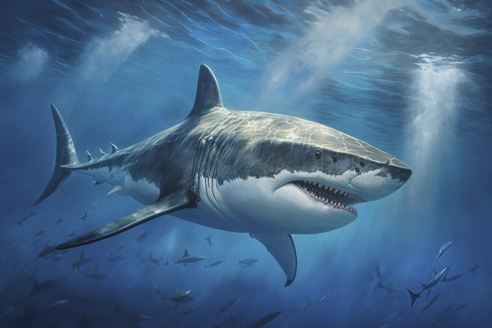
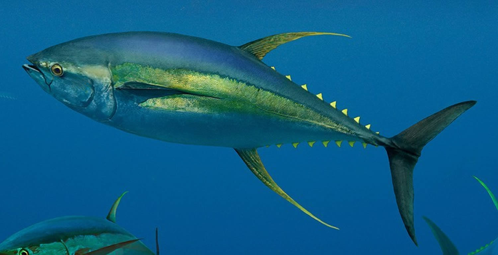
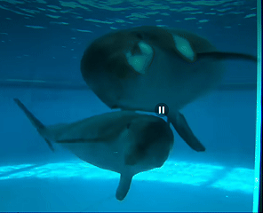
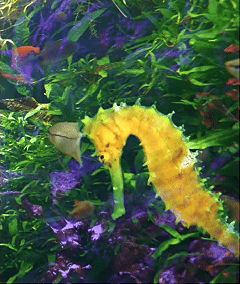
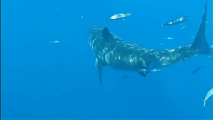
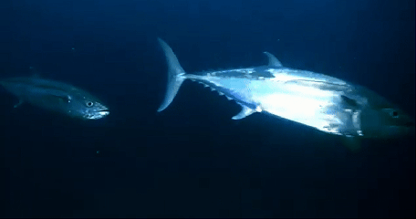

Sunlight Zone - Thông tin
Vị trí & Ánh sáng
Sunlight zone nằm ở độ sâu từ 0 đến 200 mét. Ánh sáng mặt trời mạnh nhất, cho phép quang hợp diễn ra.
Môi trường
Môi trường ấm áp, giàu oxy, áp suất thấp, dễ thích nghi cho đa dạng sinh vật.
Chuỗi thức ăn
Phytoplankton là nền tảng, cung cấp thức ăn cho cá nhỏ, cá lớn và động vật biển.
Đa dạng sinh học
Khu vực đa dạng sinh học cao nhất đại dương, sản xuất 50% oxy cho Trái Đất.


Sunlight Zone - Các loài cá
Cá Heo: Thông minh, giao tiếp bằng âm thanh!

Cá heo
Cá heo (Delphinidae) là loài động vật biển thông minh, sống theo bầy đàn lớn ở vùng nước nông. Chúng giao tiếp bằng âm thanh phức tạp, có khả năng học hỏi và thích nghi cao. Cá heo ăn cá nhỏ, mực và tôm, đóng vai trò quan trọng trong hệ sinh thái biển.
Cá Ngựa: Đực mang thai và chăm sóc trứng!

Cá ngựa
Cá ngựa (Hippocampus) có đầu giống ngựa, đuôi quắp vào rong biển. Đặc biệt, cá đực mang thai và sinh con. Chúng sống ở vùng nước ấm, ăn động vật phù du nhỏ và rất dễ bị đe dọa bởi ô nhiễm.
Cá Mập: Săn mồi đỉnh chuỗi thức ăn biển!

Cá mập
Cá mập (Selachimorpha) là loài cá ăn thịt đỉnh cao, có khứu giác nhạy bén và tốc độ bơi nhanh. Chúng sống ở vùng nước nông và sâu, đóng vai trò cân bằng hệ sinh thái biển.
Cá Ngừ: Bơi nhanh và di cư xa hàng nghìn km!

Cá ngừ
Cá ngừ (Thunnini) là loài cá săn mồi nhanh, sống ở vùng nước nông và giữa. Thịt giàu dinh dưỡng, chúng di cư xa để tìm kiếm nguồn thức ăn và có vai trò quan trọng trong chuỗi thức ăn đại dương.
THƯ VIỆN SINH VẬT



